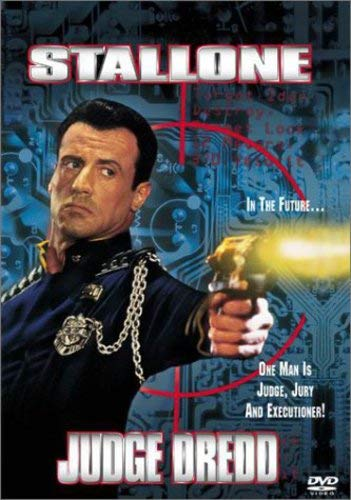
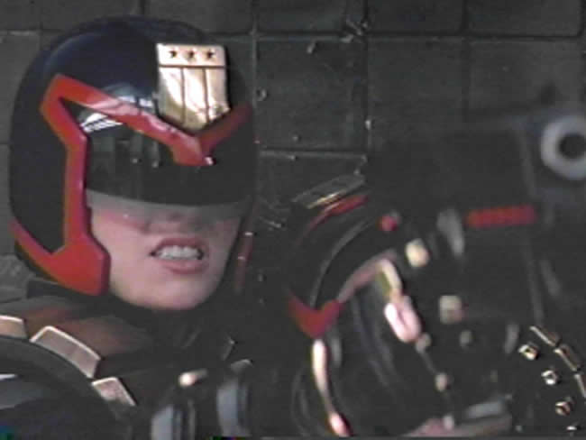
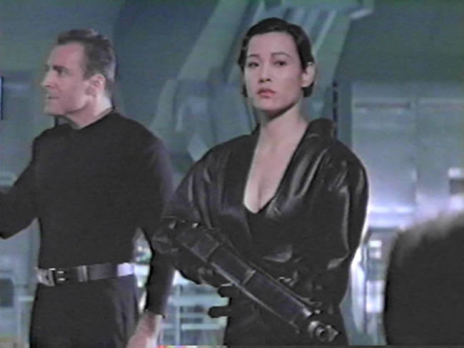

Movie review by : SFAM
Year : 1995
Directed by : Danny Cannon
Written by : John Wagner et al. (6 people in total)
Degree of Cyberpunk visuals : Medium
Correlation to Cyberpunk themes : Low
Rating : 4/10
Key cast members :

Overview: The inspiration for Judge Dredd is based off of a comicbook hero, which Hollywood determined needed to be brought to the big screen. Vice working to recreate the comic (apparently the beginning actually does this pretty well), most of the movie is completely derivative. Judge Dredd is a terrific example of an overblown Hollywood, trying to feed us a pile of crap, all dressed up with a super-hero action star and glitzy FX. The story sucks, the acting sucks, and the overall look is cheesy, but at least the FX and deaths are well done. This only barely qualifies as cyberpunk due to the setting which are made up of Blade Runner and Robocop ripoffs.

Judge Dredd takes place in a twenty-second century dystopia, where anarchy reigns supreme. Now, only the fabled "Judges" keep the peace. Judges are the ultimate authorities ? they have the ultimate power in determining someone's innocence or guilt. Here's the big surprise that Judge Dredd enlightens us to ? "power corrupts." Stallone is the lone "good guy" who holds to the "Law" at all costs. Unfortunately, he is framed by his evil friend, Rico, a judge he previously sent up the river. Now with Judge Dredd out of the way, Rico has full reign to inflict insane terror over "Mega-City One" (and WOW, what an imaginative name for a cyberpunk city!). I could go through the rest of the plot, but I'm guessing you can probably figure it out ? here's the highlights - escapes with help of sidekicks, kicks ass, uncovers plot, beats more ass, and you can guess the ending.

The Bottom Line: The pacing and tone of Judge Dredd just never seem to click. Sometimes it tries to be serious, yet others it faints to a faux-lite side. Unlike the masterful Save the Green Planet, which is able to blend comedy, horror, Sci-Fi, drama and action with aplumb, Judge Dredd fails in its attempt to be multi-tonal. The FX are very expensive, but you only can enjoy them if you ignore the endless stream of plot holes Judge Dredd presents. On paper, the supporting cast (Diane Lane, Armand Assante, Rob Schneider, Jürgen Prochnow, Max von Sydow) should be terrific (aside for Rob Schneider, of course), but most seem to have a hard time taking their roles seriously. If you haven't seen Judge Dredd, you might be able to make it through life without doing so. If you have, and think this is one of the greatest movies ever made (as some reviews on Amazon and IMDB indicate), I'm afraid our conversation is at an end. Still, if you realize up front that all you're getting is a trashy nonsensical story, with a tough Stallone kicking ass in cool ways, you might enjoy it.